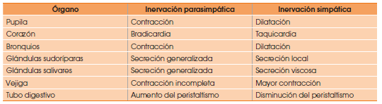
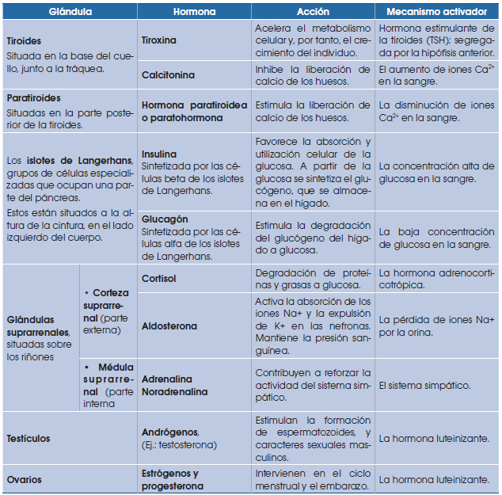

Anatomía y fisiología humana
La respiración en el ser humano
El sistema respiratorio realiza dos funciones importantes:
• Incorporación de oxígeno al organismo
• Eliminación de dióxido de carbono
Órganos y partes del sistema respiratorio
El sistema respiratorio está formado por las vías respiratorias y los pulmones.
• Las vías respiratorias son una serie de órganos en forma de tubo por los que circula el aire. En ellas distinguimos: las fosas nasales, la faringe, la laringe, la tráquea, los bronquios y los bronquiolos.
• Los pulmones son dos órganos esponjosos en forma de saco situados en el extremo inferior de cada uno de los bronquios, están formados por los bronquiolos y multitud de alveolos pulmonares, se hallan protegidos por las pleuras, dos membranas que evitan el rozamiento, y por la caja torácica (costillas y esternón).
Los pulmones se dilatan y se contraen acompasadamente gracias a sus propiedades elásticas y al movimiento de los músculos situados entre las costillas, los músculos intercostales, y el diafragma, un músculo localizado en la base de la caja torácica.
La entrada y la salida del aire en nuestro organismo se realizan gracias a dos tipos de movimiento: la inspiración y la espiración. La sucesión de ambos movimientos constituye el ritmo respiratorio.
La inspiración, o entrada de aire del exterior hacia los pulmones, es un mecanismo activo:
• El diafragma se contrae y desciende; los músculos intercostales también se contraen y elevan las costillas.
• Como consecuencia de la actividad muscular anterior, el volumen de la caja torácica aumenta y disminuye la presión del aire en su interior. La presión es ligeramente negativa respecto al aire exterior.
• El aire penetra como si fuese succionado desde el exterior hasta los alveolos pulmonares.
La espiración, o salida de aire alveolar hacia el exterior, es pasiva:
• El diafragma y los músculos intercostales se relajan. El primero asciende y las costillas se deprimen.
• Disminuye el volumen de la caja torácica, la presión del aire en su interior aumenta y se hace ligeramente superior a la del exterior.
• El aire se ve obligado a salir por las vías respiratorias.
Difusión de gases entre los alveolos y los capilares
La composición del aire que se encuentra en los alveolos pulmonares no es igual a la del aire atmosférico, debido a que:
• El aire que penetra por las vías respiratorias se humedece y, por tanto, se enriquece con vapor de agua.
• Constantemente se absorbe oxígeno y se desprende dióxido de carbono.
La energía cinética de las moléculas de los gases hace que estas choquen contra las membranas de los compartimentos del cuerpo donde se encuentran encerradas. Los choques constituyen la presión parcial del gas.
Los gases atraviesan la membrana del alveolo y la pared de los capilares. El paso se hace por difusión simple y a favor del gradiente de presión de cada gas:
• La presión parcial de O2 en el alveolo es de 100 mmHg, mientras que en la sangre, antes del intercambio, es de 40 mmHg; el gradiente de presión favorece el paso del oxígeno desde el alveolo hacia la sangre.
• La presión parcial de CO2 en la sangre antes del intercambio es de 46 mmHg, mientras que en el alveolo de 40 mmHg; el gradiente de presión favorece el paso de CO2 desde la sangre al alveolo. Aunque el gradiente es pequeño, la solubilidad del CO2 en los lípidos hace que su intercambio, que tiene lugar a través de las membranas de cada compartimento, sea muy eficaz.
Difusión de gases de los capilares sanguíneos a las células del cuerpo
El proceso tiene lugar del mismo modo que el intercambio de gases en los alveolos pulmonares.
• La presión parcial de O2 en la sangre es mayor que la del interior de las células; por ello, el oxígeno penetra hacia el citoplasma por difusión, a través de la membrana plasmática, y es utilizado para la respiración celular.
• La presión parcial de CO2 en la sangre es menor que en el interior de la célula, a causa de la respiración mitocondrial. Por tanto, el CO2 sale de la célula por difusión, y penetra en los capilares sanguíneos.
Transporte de gases por la sangre
El plasma es el responsable mayoritario de transportar moléculas de CO2 en forma de ácido carbónico. El plasma es el líquido en el que se encuentran los glóbulos rojos y el resto de los elementos celulares de la sangre. La mayoría del CO2 producido en la respiración celular que difunde hacia los capilares y entra en los glóbulos rojos, donde se transforma en ácido carbónico. Tan solo un 20% del CO2 se combina con la hemoglobina (carboxihemoglobina).
El CO2 restante que penetra en los glóbulos rojos, pero que no se combina con la hemoglobina reacciona con el agua y forma ácido carbónico. Este se disocia, debido a su inestabilidad, en iones bicarbonato y iones hidrógeno que vuelven a salir hacia el plasma. Cuando la sangre llega a los capilares del alveolo, los iones bicarbonato vuelven a entrar hacia los glóbulos rojos, donde se combinarán con iones de hidrógeno, y se generará de nuevo ácido carbónico. Ahora, el ácido carbónico se disocia en CO2 y H2O. Por la diferencia de presiones, el CO2 difunde hacia el alveolo para ser expulsado al exterior y el agua es eliminada en forma de vapor.
La salud del sistema respiratorio
El sistema respiratorio es la puerta de entrada de muchos microorganismos, virus y otros agentes externos que pueden perjudicar nuestra salud. Para evitar algunas enfermedades respiratorias, debemos adoptar medidas preventivas, como:
• Inspirar siempre por la nariz, y no por la boca.
• Evitar los lugares con mucho humo, polvo o polen.
• No fumar.
• Ventilar diariamente las habitaciones.
Algunas enfermedades respiratorias son el asma bronquial, la bronquitis aguda y el enfisema.
Enfermedades respiratorias
Asma bronquial: Es una obstrucción al paso del aire a través de los bronquios y bronquiolos, debido a la inflamación de la mucosa que recubre estas vías. Esta inflamación puede deberse a diversas causas: una reacción alérgica, una infección, etc. Los síntomas característicos de las crisis asmáticas son la presencia de silbidos durante la espiración y la sensación de ahogo. El tratamiento, en el caso que la crisis persista, consiste en la administración de medicamentos y evitar ambientes cargados de humo, polvo y polen.
El sistema circulatorio
Este sistema cumple tres funciones fundamentales:
• Reparto de nutrientes y oxígeno. Los nutrientes y el oxígeno obtenidos por el sistema digestivo y el respiratorio se reparten a todas las células del organismo.
• Recogida de las sustancias de desecho que producen las células, por ejemplo, el CO2, que son conducidas a los órganos encargados de eliminarlas.
• Transporte de hormonas y circulación de elementos celulares, etc. 2.1.
Órganos y partes del sistema circulatorio
El sistema circulatorio está formado por el corazón, los vasos sanguíneos y la sangre.
• El corazón es un órgano musculoso del tamaño de un puño, situado en la parte izquierda del tórax, entre los dos pulmones.
El interior del corazón está dividido en cuatro cavidades: dos superiores o aurículas, y dos inferiores o ventrículos.
La aurícula izquierda y el ventrículo izquierdo se comunican entre sí por la válvula mitral. La aurícula derecha y el ventrículo derecho lo hacen mediante la válvula tricúspide.
No existe comunicación alguna entre las cavidades de la parte derecha del corazón y las de la parte izquierda.
El corazón está formado por tres capas de tejido: el pericardio, que tiene función protectora al ser la capa más externa; el miocardio, que es la capa de tejido muscular cardíaco responsable de los movimientos del corazón; y el endocardio, que es una capa de tejido epitelial que recubre el interior del corazón.
• Los vasos sanguíneos son los conductos por donde circula la sangre. Forman una extensa red de tubos de diámetro variable. Existen diversos tipos de vasos sanguíneos: las arterias, las arteriolas, los capilares, las vénulas y las venas.
Las arterias son los vasos que salen del corazón para distribuir la sangre por todo el cuerpo. Las venas son los vasos que retornan la sangre al corazón.
Ambos conductos están constituidos por tres capas de tejido: una capa interna de tejido epitelial, una capa media de tejido muscular y una capa externa de tejido conjuntivo. Las paredes de las arterias son muy elásticas para poder soportar la fuerza con la que el corazón impulsa la sangre, mientras que las paredes de las venas lo son menos.
Las arteriolas son ramificaciones de las arterias, y por ello su diámetro es inferior. Del mismo modo, las vénulas son ramificaciones de las venas. Los capilares son ramificaciones de arteriolas y vénulas, y sus paredes son muy finas, porque en ellos tiene lugar el intercambio de sustancias con las células.
• La sangre está formada por el plasma y los elementos celulares.
El plasma es un líquido, compuesto por agua y diversas sustancias, como proteínas, lípidos…, en el que se encuentran inmersos los elementos celulares.
Los elementos celulares son los eritrocitos, los leucocitos y los trombocitos.
Movimientos del corazón
La sangre circula por todo el cuerpo impulsada por el corazón, gracias a los movimientos del miocardio. Estos movimientos son la sístole y la diástole.
La sístole es el movimiento de contracción del miocardio, tejido muscular; y la diástole es el movimiento de relajación.
El miocardio de las aurículas y los ventrículos no se contrae al mismo tiempo, sino que lo hace en dos etapas diferentes.
Las aurículas realizan un movimiento de diástole que permite que entre la sangre procedente de las venas cavas y pulmonares. A su vez, los ventrículos hacen un movimiento de sístole que expulsa la sangre que contienen hacia las arterias pulmonar y aorta.
Las válvulas mitral y tricúspide están cerradas. De este modo, la sangre no puede retroceder.
A continuación, las aurículas hacen un movimiento de sístole, gracias al cual se contraen y la sangre que contienen pasa a los ventrículos. Simultáneamente, los ventrículos realizan un movimiento de diástole y se llenan de sangre procedente de las aurículas.
Las válvulas mitral y tricúspide están abiertas.
La circulación de la sangre
Una vez que la sangre emprende su trayecto por el interior del sistema circulatorio, realiza dos recorridos diferentes conocidos como la circulación mayor y la circulación menor.
• En la circulación mayor, la sangre recorre los órganos de nuestro cuerpo distribuyendo nutrientes y oxígeno.
La sangre, cargada de oxígeno, pasa de la aurícula izquierda al ventrículo izquierdo y sale del corazón por la arteria aorta.
Las ramificaciones de la aorta permiten que la sangre llegue a los órganos.
Durante este recorrido, la sangre va cediendo los nutrientes y el oxígeno que transporta a las células y recoge el dióxido de carbono y otras sustancias de desecho que estas producen.
Este recorrido finaliza cuando la sangre regresa a la aurícula derecha del corazón a través de las venas cavas.
A continuación, comienza la circulación menor.
• En la circulación menor, también llamada pulmonar, la sangre va desde el corazón hacia los pulmones para ceder el dióxido de carbono y captar el oxígeno.
La sangre, cargada de dióxido de carbono, pasa de la aurícula derecha al ventrículo derecho y va de este hacia las arterias pulmonares, que la conducirán a los pulmones.
En los alveolos pulmonares tiene lugar el intercambio gaseoso, en el que la sangre cede el dióxido de carbono y capta el oxígeno.
La sangre, cargada de oxígeno, entra de nuevo en la aurícula izquierda a través de las venas pulmonares. De esta manera, se inicia otra vez la circulación mayor.
Para concluir, podemos afirmar que, para que una gota de sangre realice un recorrido completo, debe pasar dos veces por el corazón. Por este motivo, decimos que en el ser humano la sangre realiza una circulación doble.
La salud del sistema circulatorio
En la actualidad, en los países desarrollados, los trastornos del sistema circulatorio constituyen la principal causa de mortalidad. Por todo ello es muy importante seguir diversas acciones preventivas:
• Seguir una dieta baja en grasas animales, ya que algunas, como el colesterol, se depositan en el interior de los vasos sanguíneos y los obstruyen. Para ello, debemos moderar o suprimir el consumo de alimentos como los productos de pastelería, el chocolate, la grasa de la carne, etc.
• Hacer ejercicio físico moderado para fortalecer la musculatura del corazón.
• No fumar, ya que el tabaco reduce el diámetro de los vasos sanguíneos.
Muchas de las enfermedades que afectan a nuestro cuerpo se manifiestan en la sangre y para poder detectarlas se realizan los análisis de sangre. Estos consisten en el estudio de una muestra de sangre, de la que se calcula el número de diferentes elementos celulares, la cantidad y el tipo de sustancias que contiene el plasma.
Los aspectos que se analizan reciben el nombre de parámetros sanguíneos. Algunos de ellos son los eritrocitos, número de eritrocitos por cada mm3 de sangre; hematócrito, proporción entre el volumen de los elementos celulares y el volumen de sangre; leucocitos, número de leucocitos por cada mm3 de sangre; glucemia, miligramos de glucosa en 100 ml de sangre; colesterolemia, miligramos de colesterol en 100 ml de sangre.
Cuando alguno de estos parámetros se separa de los valores preestablecidos, significa que se sufre algún trastorno. Por ejemplo, el hematócrito tiene un valor bajo cuando se padece una anemia.
Enfermedades del sistema circulatorio
Hipertensión arterial: Consiste en un aumento anormal de los valores de la tensión sanguínea debido a diversas causas, por ejemplo, enfermedades cardíacas y pulmonares. Los síntomas son dolores de cabeza y vértigo. Sin embargo, en muchos casos, no se produce ningún síntoma. El tratamiento consiste en un estricto control médico y seguir las medidas preventivas citadas anteriormente.
Ateroesclerosis: Consiste en la acumulación de colesterol en las paredes de las arterias, de modo que dificulta la circulación de la sangre. Esta acumulación se debe a diversas enfermedades y se agrava por fumar. Como consecuencia, puede producirse una enfermedad coronaria. El tratamiento consiste en seguir las medidas preventivas citadas anteriormente.
Infarto de miocardio: Se trata de una lesión de una parte del músculo cardíaco a causa de la obstrucción de algunas de las arterias que llevan la sangre al corazón. Como consecuencia, esta parte del corazón no recibe sangre y queda inutilizada. Los síntomas son un fuerte dolor en el pecho y sensación de angustia. El tratamiento consiste en la administración de medicamentos y seguir las medidas preventivas citadas anteriormente.
El cerebro humano
A lo largo del proceso evolutivo, el cerebro humano ha alcanzado un elevado grado de desarrollo que le ha permitido un mayor perfeccionamiento de sus funciones.
El cerebro humano consta de dos hemisferios cerebrales, derecho e izquierdo, divididos por el cuerpo calloso, que es una densa masa de fibras nerviosas.
La corteza cerebral es la parte del cerebro donde se integra la información que llega a este, se elaboran las respuestas y se llevan a cabo los procesos de la memoria y el razonamiento. Por esta razón, existe una relación directa entre la superficie de la corteza cerebral y el grado de perfeccionamiento de las funciones cerebrales. Para aumentar esta superficie se han desarrollado unos repliegues, denominados circunvoluciones cerebrales, que aparecen en los mamíferos. El gran número de estas en el ser humano hace que su corteza cerebral tenga una superficie de 2500 cm2. La corteza está dividida en lóbulos, que son zonas limitadas por unos surcos y que reciben el nombre del hueso del cráneo más cercano: formal, parietal, temporal y occipital.
Existen distintas áreas de la corteza, las cuales desarrollan funciones especializadas:
• Corteza motora: Controla el movimiento de los músculos esqueléticos. Se localiza en el lóbulo frontal.
• Corteza sensorial: Recibe los estímulos del tacto, la temperatura, el dolor y el gusto. Se sitúa en la parte superior del lóbulo parietal.
• Corteza visual: A ella llegan las sensaciones visuales; ocupa el lóbulo occipital.
• Corteza auditiva: Recibe los estímulos sonoros y se encuentra en la zona más próxima al oído, en el lóbulo temporal.
• Corteza de asociación: Existen otras áreas de la corteza cuya función es relacionar la información que recibe el cerebro acerca del medio con las emociones, la memoria y el aprendizaje. Estas zonas se localizan en el lóbulo frontal, el temporal y el occipital, aunque el mecanismo de los procesos que tiene lugar en ellas está todavía en estudio.
En la parte central del encéfalo se encuentran dos estructuras formadas por sustancia gris, el tálamo y el hipotálamo, que participan en los procesos de integración y procesamiento de los estímulos.
• El tálamo interviene en la conexión de las zonas sensitivas y motoras de la corteza.
• El hipotálamo recibe información sobre el estado general del organismo y regula procesos metabólicos a través del sistema endocrino, que describiremos en la próxima unidad), o bien a través de impulsos nerviosos que causan sensaciones como la sed o el hambre.
La inteligencia es la facultad de pensar, conocer y comprender la información que recibimos del medio, y se manifiesta en los cerebros más desarrollados, como el del ser humano. Se basa en la capacidad de memorizar y, por tanto, de aprender.
La memoria se desarrolla a partir de una serie de conexiones entre neuronas, localizadas básicamente en la corteza de asociación, que almacenan los estímulos que llegan al cerebro. Comprende tres fases distintas:
• La memoria inmediata: Es la información que se acaba de recibir y se mantiene unos segundos en las redes de la corteza sensorial.
• La memoria reciente: Retiene hechos y pensamientos localizados en un período de unas horas.
• La memoria remota: Comprende los hechos y pensamientos más antiguos.
Cualquier nuevo estímulo que llegue al cerebro, ya sea visual, sonoro, táctil, etc., es comparado con una experiencia similar anterior, de este modo se desarrolla el proceso del aprendizaje.
El ser humano tiene la capacidad de comunicarse mediante el lenguaje, que es el código empleado para que el individuo pueda comunicarse con otros seres humanos. Se aprende durante la infancia, desde que el niño es capaz de emitir sonidos y comienza a asociar algunos sonidos con determinados objetos, y desarrolla el lenguaje oral. El lenguaje escrito se aprende en una fase de maduración posterior de los niños. Así, la memoria es la base que permite el aprendizaje del lenguaje.
El proceso del pensamiento se basa en la capacidad de comunicarse por medio del lenguaje. Permite asociar, además de estímulos concretos, ideas almacenadas en la memoria, con lo que se llega a desarrollar el razonamiento, y a tener capacidad de juicio.
Las emociones dependen de la actividad que se lleva a cabo en neuronas situadas en la base del cerebro, que están conectadas con la corteza cerebral y el hipotálamo. Esta conexión permite que, tanto un determinado estímulo externo, como un pensamiento, produzcan reacciones en el organismo como la aceleración del pulso que provoca el hecho de estar ante un peligro, ya sea real o producido por la imaginación.
La capacidad de desarrollar las funciones cerebrales se transmite de forma hereditaria, pero su desarrollo real depende del proceso de aprendizaje de cada individuo, que formará su inteligencia y su personalidad.
Emisión de la respuestas motoras
Para responder a los estímulos, desde el sistema nervioso central se emiten las órdenes hacia distintos puntos del organismo. Esta respuesta puede dirigirse a los músculos, donde se producirá un movimiento, o bien a las glándulas endocrinas a través del hipotálamo, para dar lugar a una secreción hormonal.
Las respuestas viajan desde el sistema nervioso central hasta la zona donde se producen del mismo modo que lo hacen los estímulos: por impulsos nerviosos. En esta unidad nos centraremos en el estudio de las respuestas relacionadas con los músculos.
Los cuerpos de las neuronas de los centros nerviosos emiten las respuestas, que viajan por los nervios motores hasta los músculos efectores.
Según la respuesta que transportan, los nervios motores forman:
• La red nerviosa somática: Controla los músculos que pueden moverse de forma voluntaria, es decir, la musculatura esquelética. El impulso comienza en el área motora de la corteza cerebral o en el cerebelo, sigue por el tronco encefálico, la médula espinal, y de esta salen los nervios motores a distintos niveles hacia los músculos.
• La red nerviosa autónoma: Controla los músculos que se mueven de forma involuntaria, es decir, la musculatura lisa y la cardíaca.
El impulso puede comenzar en el tronco encefálico o en la médula espinal. Cada nervio motor sale de la médula espinal, conecta con un ganglio nervioso y desde este parten las conexiones nerviosas hacia los diferentes órganos.
Por su parte, la respuesta autónoma se realiza de dos modos:
Respuesta del sistema nervioso simpático
El sistema nervioso simpático se activa en situaciones de estrés: miedo confusión, ira, huida, lucha, ejercicio físico. Su activación comporta la liberación de adrenalina y noradrenalina, neurotransmisores que tienen los siguientes efectos sobre el organismo:
• Dilatación de pupilas
• Aumento de la frecuencia cardíaca y de la contracción cardíaca y, como consecuencia, aumento de la presión arterial
• Broncodilatación para permitir la entrada de aire
• Vasodilatación de corazón, hígado, músculos y tejido graso
• Glucogenolisis en el hígado y lipólisis del tejido adiposo
• Aumento de la glucosa sanguínea
Respuesta del sistema nervioso parasimpático
El sistema nervioso parasimpático relaja el cuerpo y, por lo tanto, ejerce una función contraria al simpático. Su actuación conlleva la liberación, entre otros neurotransmisores, de acetilcolina, que tiene los siguientes efectos sobre el organismo:
• Reduce el ritmo respiratorio y el cardíaco.
• Estimula la secreción salivar.
• Estimula los músculos involuntarios del sistema digestivo para favorecer la digestión.
• Estimula la producción de orina.
• Retarda el transporte de glucosa hacia órganos no implicados en la digestión.
La mayoría de los órganos recibe una doble inervación: simpática, estimuladora; y parasimpática, relajante. La alternancia de estos dos tipos de estímulos es un mecanismo fundamental en la regulación de las funciones vitales. La siguiente tabla resume los efectos de la inervación simpática y parasimpática sobre diferentes órganos:

La sinapsis neuromuscular
Los nervios motores transportan las respuestas del sistema nervioso central en forma de estímulos, que se van transmitiendo a lo largo de las fibras nerviosas hasta llegar a los músculos. El impulso nervioso que llega al músculo produce una excitación de las fibras de este, las cuales se contraen. La contracción del músculo esquelético en los vertebrados es la más estudiada. En los músculos se produce una sinapsis entre la neurona y la musculatura, de forma similar a la que existe entre dos células nerviosas. A la unión entre una neurona y una fibra muscular la denominamos sinapsis neuromuscular, y la estructura obtenida es la placa motora.
• En el extremo del axón se produce una secreción de acetilcolina.
• Esta sustancia es captada por los receptores de la membrana plasmática de la fibra muscular. Esto provoca un cambio en la concentración de iones Na+ que genera un potencial eléctrico.
• El cambio de potencial produce la secreción de iones Ca2+ desde el retículo endoplasmático al citoplasma. Esta secreción provoca la contracción de la fibra muscular.
A diferencia de la sinapsis entre neuronas, la sinapsis neuromuscular es siempre excitadora, produce siempre una contracción muscular.
El aparato locomotor
El aparato locomotor lleva a cabo un tipo de respuesta elaborada por el sistema nervioso, el movimiento. Como hemos visto, los nervios; sensitivos informan a los centros nerviosos sobre la posición del organismo y sus partes, y los nervios motores transmiten la respuesta a los músculo. El aparato locomotor está constituido por el sistema esquelético y el sistema muscular, los cuales funcionan de forma coordinada. Cuando el sistema nervioso envía una orden de contracción o de relajación a los músculos, estos, junto a los huesos a los que están unidos, producen un movimiento.
El sistema esquelético
El sistema esquelético está formado por los huesos, estructuras constituidas principalmente por tejido óseo. Los huesos tienen varias funciones:
• Sostienen nuestro cuerpo.
• Protegen algunos órganos delicados; por ejemplo, el cráneo resguarda al encéfalo.
• Posibilitan una gran variedad de movimientos.
• Constituyen un importante depósito de minerales, como el calcio.
El esqueleto humano consta de 208 huesos y estos pueden agruparse en dos zonas: esqueleto axial y esqueleto apendicular.
El esqueleto axial comprende:
• Cráneo: Los huesos del cráneo se caracterizan por ser planos. Su función es la de proteger el encéfalo. La parte anterior forma la cara.
• Columna vertebral: Está formada por una serie de huesecillos cortos llamados vértebras. En su parte central tienen un orificio por el cual pasa la médula espinal.
La columna vertebral constituye el soporte principal de nuestro cuerpo.
• Tórax: Está formado por las costillas, huesos planos con forma de arco que se unen por la parte anterior del cuerpo al esternón, hueso plano y alargado, y por la parte posterior a la columna vertebral.
El conjunto de las costillas, el esternón y la parte de la columna vertebral en la que se unen las costillas delimita el tórax, cuya función es proteger el corazón y los pulmones.
El esqueleto apendicular comprende:
• Extremidades superiores: Son los apéndices denominados brazos, que se unen al esqueleto axial por el llamado cinturón escapular.
• Extremidades inferiores: Son los apéndices denominados piernas, que se unen al esqueleto axial por el cinturón pélvico.
La función de ambos tipos de extremidades es la de ejecutar la mayor parte de los movimientos.
Las articulaciones son las uniones entre dos o más huesos. La superficie de contacto entre los huesos está recubierta por tejido cartilaginoso para evitar el rozamiento y, por tanto, el desgaste óseo en los movimientos.
La función de las articulaciones es proporcionar movilidad entre los huesos.
Según el grado de movimiento de los huesos que las constituyen, las articulaciones pueden clasificarse en articulaciones fijas, articulaciones semimóviles y articulaciones móviles.
• Las articulaciones fijas: Son aquellas que casi no tienen capacidad de movimiento. Su función es proporcionar estabilidad a la unión de los huesos. Este es el caso de los huesos del cráneo, los cuales para aumentar la estabilidad tienen forma irregular que les permite encajar mejor entre ellos.
• Las articulaciones semimóviles: Son las que tienen poca capacidad de movimiento. Su función es proporcionar cierta flexibilidad. Un ejemplo de este tipo es la articulación entre las vértebras.
• Las articulaciones móviles: Son las que permiten muchos movimientos. En este caso los huesos no están en contacto directo. Un ejemplo es la articulación del codo, que permite la flexión y extensión del brazo.
El sistema muscular
El sistema muscular está formado por los músculos. Los que están unidos a los huesos y recubren el esqueleto están formados por tejido muscular estriado, y reciben el nombre de músculos esqueléticos.
Estos músculos inducen el movimiento gracias a su capacidad de contracción, es decir, a su capacidad de reducir el tamaño de las fibras que los constituyen en un momento determinado.
El sistema muscular del aparato locomotor está formado por unos cuatrocientos músculos.
Los músculos esqueléticos constituyen bandas de fibras que pueden insertarse en los huesos mediante los tendones, estructuras alargadas de tejido conjuntivo.
La salud del aparato locomotor
Para mantener la salud de nuestro aparato locomotor es muy importante seguir una dieta equilibrada y evitar el sedentarismo. La práctica de ejercicio físico tiene efectos beneficiosos sobre el aparato locomotor, así como sobre el resto de los sistemas del organismo, y contribuye a nuestro bienestar mental.
El ejercicio físico desarrolla la musculatura de forma que constituye una capa protectora de elementos como articulaciones, ligamentos y huesos. Además, ayuda a mantener un peso adecuado que previene la aparición de muchos problemas relacionados con la obesidad.
La mayoría de los trastornos o enfermedades del aparato locomotor suelen manifestarse como un dolor en un sector determinado de nuestro cuerpo, o bien como una inflamación. Es el caso de las fracturas, los esguinces, las contracturas, la escoliosis, la artritis, la artrosis, etc.
Podemos distinguir tres tipos de trastornos, dependiendo de la parte del aparato locomotor que afectan:
• Óseos, como las fracturas
• Articulares, como los esguinces
• Musculares, como las contracturas
Fracturas: Las fracturas son lesiones que consisten en la rotura parcial o total de un hueso debido a un traumatismo externo, como una caída o un accidente de tránsito. El síntoma principal es un intenso dolor. En función de la gravedad de la fractura, el tratamiento será más o menos complejo, aunque en todos los casos debe cumplir los siguientes objetivos: evitar complicaciones como infecciones o hemorragias, reducir el dolor y la inflamación mediante medicamentos y favorecer la consolidación del hueso fracturado mediante la inmovilización de la parte lesionada.
Esguinces: Los esguinces consisten en la rotura o una excesiva distensión de los ligamentos de las articulaciones debido a un traumatismo o a un movimiento brusco. El síntoma principal también es un dolor intenso. El tratamiento consiste en reducir el dolor y la inflamación, así como un tiempo de reposo para favorecer la recuperación de los tejidos lesionados.
Contracturas: Las contracturas son un trastorno muscular causado por la contracción continuada e involuntaria del músculo. Entre los síntomas principales, destacan el abultamiento de la zona afectada, el dolor y el mal funcionamiento del músculo. El tratamiento consiste en la aplicación de calor en la zona y la realización de masajes, que deben ser realizados por personal calificado; si esto no fuese así, la lesión podría agravarse.
Dolor de espalda: El dolor de espalda representa uno de los problemas de salud del aparato locomotor más frecuentes en nuestra sociedad. Una de las causas más comunes de estos dolores es la hernia discal, que consiste en la presión de un disco intervertebral sobre uno o varios nervios. Muy a menudo, los dolores de espalda afectan también a otras zonas del cuerpo empeorando el estado general de la persona.
Algunos trastornos o enfermedades del aparato locomotor, como dolores de espalda, contracturas, etc., se deben a que mantenemos posturas incorrectas. Por ello, es necesario corregir los malos hábitos y adoptar otros más saludables.
La mayoría de problemas posturales se inician en la infancia por la adopción de posturas incorrectas no corregidas a tiempo. Esto puede ocasionar, aparte de defectos estéticos, desarreglos en la actividad de los órganos internos y problemas en funciones como la respiración, la deglución, la circulación sanguínea o la locomoción.
Una buena postura es aquella capaz de mantener una correcta alineación de los diferentes elementos corporales con el mínimo esfuerzo y estrés sobre el sistema nervioso y el aparato locomotor.
Algunos consejos para una postura correcta son:
• Si se lleva peso, distribuirlo uniformemente.
• Mantener el cuerpo erguido, sin exagerar las curvaturas normales de la espalda.
• Al sentarse, descansar los pies en el suelo flexionando las rodillas en ángulo recto respecto a las caderas y evitar la torsión de la columna vertebral.
Para el diagnóstico de trastornos y enfermedades del sistema locomotor y de otros sistemas del organismo, el estudio radiológico es una técnica muy útil. Esta técnica de estudio consiste en la utilización de rayos X para detectar tejidos de diferentes densidades. Por ejemplo, los rayos X atraviesan tejidos blandos, pero no tejidos densos como el óseo.
Una vez las radiaciones han atravesado la parte del cuerpo sometida a estudio, llegan a una placa fotográfica que nos proporciona imágenes de tonalidades blancas, negras y grisáceas.
Los tejidos densos como el óseo dan lugar a las imágenes más blancas, mientras que los espacios vacíos dan lugar a las imágenes negras. Otros tejidos menos densos, como el muscular, dan lugar a imágenes más grisáceas.
El sistema endocrino humano
La producción de hormonas en el ser humano es similar a la del resto de los mamíferos; diversas glándulas y tejidos secretores intervienen en la regulación de los procesos fisiológicos del organismo.
En la siguiente ilustración podemos apreciar la localización de los principales componentes del sistema endocrino humano. A continuación describimos los órganos secretores y la función de las distintas hormonas que intervienen en el metabolismo humano.
Hipotálamo
Está formado por tejido nervioso, cuyas neuronas reciben información procedente de la corteza cerebral acerca de los estímulos externos o internos.
El hipotálamo sintetiza neurohormonas que envía a la glándula hipófisis y pueden ser de dos tipos:
• Neurohormonas de función estimuladora o inhibidora sobre la hipófisis anterior.
• Otras neurohormonas pasan a la hipófisis posterior, donde son almacenadas, y desde allí se vierten a la sangre para alcanzar a los órganos diana. Estos son la oxitocina y la hormona antidiurética (ADH).
—La oxitocina estimula las contracciones de la musculatura del útero durante el parto y después de la expulsión del feto, para favorecer la recuperación de su volumen normal. También provoca la salida de la leche de las células glandulares de la mama.
—La hormona antidiurética (ADH) estimula la reabsorción de agua en las nefronas de los riñones. Así se mantienen constantes los valores de la presión sanguínea.
Hipófisis
En la hipófisis distinguimos:
• Hipófisis anterior o adenohipófisis: Tiene función glandular y segrega hormonas que pasan a la sangre.
• Hipófisis posterior o neurohipófisis: Almacena las neurosecreciones del hipotálamo y las libera al torrente sanguíneo.
La hipófisis anterior segrega seis hormonas diferentes, que podemos clasificar en dos grupos:
• Hormonas que actúan directamente sobre órganos diana: Son la hormona del crecimiento o somatotropina y la prolactina:
—La hormona del crecimiento o somatotropina (GH) actúa sobre los tejidos aumentando la síntesis de proteínas y estimula el crecimiento de los huesos.
—La prolactina (PRL) estimula la síntesis de leche en las células glandulares de la mama después del parto. Es activada por la succión del recién nacido.
• Hormonas que estimulan glándulas endocrinas: Pertenecen a este grupo la hormona estimulante de la tiroides (TSH), la hormona adrenocorticotrópica (ACTH), la hormona foliculoestimulante (FSH) y la hormona luteinizante (LH):
—La hormona estimulante de la tiroides (TSH) estimula las células de la glándula tiroides para que aumente su producción de tiroxina.
—La hormona adrenocorticotrópica (ACTH) estimula la producción de cortisol en la corteza de las glándulas suprarrenales.
—La hormona foliculoestimulante (FSH) actúa sobre los testículos, y activa la producción de espermatozoides, y estimula la maduración de los ovocitos (células que darán lugar a los óvulos).
—La hormona luteinizante (LH) estimula la producción de testosterona por parte de las células intersticiales de los testículos y activa la maduración de los ovocitos a óvulos y su expulsión hacia las trompas de Falopio.
Glándulas endocrinas
Los centros de control hormonal, el hipotálamo y la hipófisis, regulan la síntesis y la secreción de hormonas en distintas partes del organismo.
A continuación, resumimos las principales glándulas endocrinas, las hormonas que sintetizan y el mecanismo que activa su secreción.

Hormonas tisulares
Una parte de las hormonas de nuestro organismo se sintetiza en tejidos no glandulares. Estas hormonas no son vertidas a la sangre, sino que actúan localmente. La gastrina y la histamina son dos de las más conocidas.
• La gastrina es segregada por la mucosa del estómago, en la zona del píloro. Estimula la secreción del jugo gástrico y del pancreático, y modifica la motilidad gástrica y esofágica.
• La histamina se encuentra en los mastocitos, que son un tipo de glóbulos blancos. Actúa como un potente dilatador de los capilares y de los vasos sanguíneos, y produce la contracción de la musculatura lisa.
Mecanismos de acción hormonal
Cuando las hormonas llegan a los órganos efectores, intervienen en las reacciones del metabolismo celular de distintos modos, lo que depende de la naturaleza química de la hormona.
Según su composición, a las hormonas las clasificamos en hormonas lipídicas u hormonas peptídicas.
Hormonas lipídicas: Conjunto de hormonas liposolubles que pueden atravesar con facilidad la membrana plasmática. Muchas de ellas son derivadas del colesterol.
Hormonas peptídicas: Conjunto de hormonas compuestas por una cadena más o menos larga de aminoácidos. Se trata de moléculas hidrosolubles y, por tanto, no pueden atravesar la membrana plasmática por sí solas.
A continuación, mostramos dos ejemplos, que pertenecen a cada uno de estos grupos: la testosterona y la insulina.
• La hormona lipídica atraviesa la membrana y se une al receptor que está en el citoplasma. • El complejo hormona-receptor pasa al interior del núcleo celular y se induce la síntesis del ARNm. • El ARNm se traduce, y se genera una proteína. • La proteína estimula la formación de espermatozoides y la aparición de los caracteres sexuales secundarios. |
• La insulina se une a un receptor situado en la membrana plasmática. • El complejo hormona-receptor induce la síntesis de adenosín monofosfato cíclico (AMP cíclico) a partir de ATP. • El AMP cíclico activa la acción de las enzimas que participan en el paso de glucosa al interior de la célula y en la síntesis de glucógeno. |
El crecimiento en el ser humano
Hemos descrito la actividad de las distintas hormonas, pero estas no actúan de forma aislada, sino que la acción conjunta de todo el sistema endocrino hace posible el desarrollo de los procesos vitales.
Un ejemplo de la acción conjunta de las hormonas es el crecimiento del individuo, proceso que inicia con el nacimiento y cesa al llegar a la edad adulta. Esto se debe a la acción de la hormona del crecimiento y de la tiroxina.
Control hormonal del crecimiento humano
—El hipotálamo controla el buen funcionamiento de todo el proceso. Segrega neurohormonas que activan a la hipófisis.
—La hipófisis anterior segrega la hormona estimulante del tiroides (TSH), que actuará sobre esta glándula, y la hormona del crecimiento (GH), cuyos órganos diana son los músculos y los huesos, principalmente.
La hormona del crecimiento favorece la utilización de aminoácidos para sintetizar proteínas estructurales, por lo que produce un aumento de la masa muscular, y un alargamiento y calcificación de los huesos.
—La glándula tiroides segrega la tiroxina, que activa los procesos de obtención de la energía necesaria para las reacciones de síntesis de las moléculas que forman los músculos y los huesos. También interviene en la maduración del sistema nervioso.
Anomalías en la secreción hormonal
Las disfunciones en la secreción hormonal producen diversos trastornos en el organismo. En el siguiente cuadro resumimos dos de las anomalías hormonales más estudiadas:
Anomalías en la secreción de tiroxina
Hipotiroidismo: Se produce cuando la síntesis y secreción de tiroxina o TSH es insuficiente. Sus síntomas principales son un cansancio excesivo, sensación de frío, pérdida de memoria, dificultad de movimientos y aumento de peso.
Hipertiroidismo: Se da cuando el funcionamiento de la tiroides es excesivo y se caracteriza por un incremento de la actividad, intolerancia al calor, nerviosismo, irritabilidad, aumento del ritmo cardíaco y pérdida de peso.
En ambos casos aparece un abultamiento debajo del mentón, el bocio, producido por el aumento de la tiroides, para compensar el mal funcionamiento hormonal.
Anomalías en la secreción de GH
Enanismo y gigantismo: Son las enfermedades relacionadas con el defecto o el exceso de secreción de GH durante la época de crecimiento. Se trata de personas pequeñas o muy grandes de cuerpo proporcionado y con plenas facultades mentales.
Acromegalia: Se produce cuando la secreción de GH es excesiva durante la etapa adulta. Se caracteriza por un crecimiento desmesurado de las extremidades, así como de los huesos de la cara.